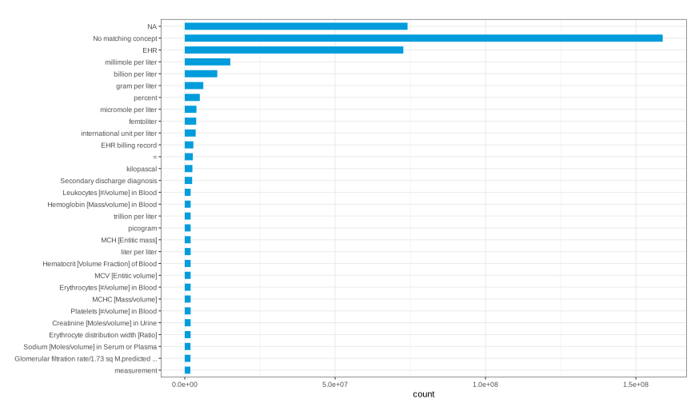

# PROJECT SETUP# #################### Libraries #################### #library(here)library(tidyverse)library(dbplyr, warn.conflicts =FALSE)library(rlang, warn.conflicts =FALSE)library(odbc)# #################### Constants #################### #CONFIG_PATH <-"config/db_config.yml"OMOP_TABLES_DIR <-"res/tables/"OMOP_COLUMNS_DIR <-"res/columns/"INPUT_TABLES_FILE <-"clinical.txt"OUTPUT_PATH <-"out/concept_frequency.csv"# #################### Functions: Data #################### ## Higher order function to conditionally apply a pipe# Note that the cond is not vectorised (should be a single logical)pipe_if <-function(df, cond, func) {if (cond) func(df)else df}# Load the list of OMOP clinical tablesload_table_list <-function(filename) {read_delim(file =here(paste0(OMOP_TABLES_DIR, filename)),delim =",",col_names =FALSE,col_types ="c",show_col_types =FALSE)$X1 |>map(function(t) { tolower(t) })}# Load OMOP column specs for the given tableload_column_metadata <-function(table) {read_csv(file =here(paste0(OMOP_COLUMNS_DIR, table, "_column_spec.csv")),col_types ="cIlcccllcIc",show_col_types =FALSE)}# Load OMOP column specs extracting Concept columnsload_concept_columns <-function(table) { OMOP_VER <-53 OMOP_CONCEPT_TYPE <-"concept"load_column_metadata(table) |>filter(version <= OMOP_VER, type == OMOP_CONCEPT_TYPE) |>pull(column)}# Debugging output##clinical_tables <- load_table_list("clinical.txt")#clinical_tables## concepts_by_table <- clinical_tables |># # keep(function(t) { t == "person" || t == "death" }) |># map(function(t) { l <- list(); l[[t]] <- load_concept_columns(t); l }) |># list_flatten()# concepts_by_table# map(ls(concepts_by_table), function(t) { list(t, concepts_by_table[[t]] |> as.list()) })# Load DB configurationdb_load_config <-function(filepath) { config = config::get(file =here(filepath))}# Connect to a database from the given configdb_connect <-function(config) {# Load DB connectiondbConnect(odbc(),driver =as.character(config["odbc_driver"]),database =as.character(config["odbc_database"]),server =as.character(config["odbc_server"]),port =as.integer(config["odbc_port"]),uid =as.character(config["odbc_uid"]),pwd =as.character(config["odbc_pwd"]))}# Load table from DBdb_omop_table <-function(tablename, config, conn, cols=NULL) {tbl(conn, in_schema(as.character(config["odbc_schema"]), tablename)) |>pipe_if(!missing(cols), \(df) df |>select(all_of(cols))) |># head() |> # Head of all tables# pipe_if(tablename != "concept", \(df) df |> head()) |> # Head of non Concept tablescollect()}# Enrich given data frame with the count by column, and include table and column names as metadatacount_with_metadata <-function(df, tablename, colname) { df |>rename(concept =all_of({{colname}})) |>count(concept, name="count") |>mutate(table=tablename,column=colname,.before=concept)}# Enrich data frame adding concept namesjoin_with_concept <-function(df, concepts_df) { df |>left_join( concepts_df,by=join_by(concept == concept_id))}# #################### Functions: Plots #################### ## Arranges rows by "count" and update factor levels (for the arrangement to be respected by plots)arrange_by_count <-function(.df) { .df |># Arrange by count, which sorts the dataframe but NOT the factor levelsarrange(desc(count)) |># Update the factor levelsmutate(concept_name=fct_reorder(concept_name, count))}# Groups rows by concept name, summarising the countsgroup_by_name <-function(.df) { .df |>group_by(concept_name) |>summarise(count=sum(count))}# Returns a vector of N colours (N <= 12) to use as paletteget_palette <-function(n) {c("#009cdb", "#00a3c0", "#00a599", "#33a46f", "#6e9e4c", "#9a933c","#bd8445", "#d57562", "#db6d8a", "#cc72b2", "#a881d3", "#7090e2") |>head(n)}# Returns a bar plot of frequency countsfreq_bar_plot <-function(.df, head=30, title="", fill="#999999") { .df |>group_by_name() |>arrange_by_count() |>head(head) |>ggplot(aes(x=concept_name, y=count)) +geom_bar(stat="identity", fill=fill, width=.6) +coord_flip() +xlab("") +scale_x_discrete(label=function(x) { stringr::str_trunc(x, 50) }) +ggtitle(label=title) +theme_bw()}# Returns a pie plot of concept distribution with percentagesdist_pie_plot <-function(.df, head=10, title="", fill=c(), border="white") { .df |>group_by_name() |>arrange_by_count() |>head(head) |># Calculate count %mutate(percent =round(count /sum(.df$count) *100)) |># Plotggplot(aes(x="", y=count, fill=concept_name)) +geom_bar(stat="identity", width=1, colour="white") +coord_polar("y", start=0) +# Remove background, grid, numeric labelstheme_void() +# Embed count %geom_text(aes(label=paste0(percent, "%")),position=position_stack(vjust=0.5),colour="white", fontface ="bold", size=6) +# Title and colourggtitle(label=title) +scale_fill_manual(values=fill)}
Data Processing
Frequency table
Frequency table for OMOP concepts in clinical tables.
Clincial tables are:
CARE_SITE
CONDITION_OCCURRENCE
DEATH
DEVICE_EXPOSURE
DRUG_EXPOSURE
FACT_RELATIONSHIP
LOCATION
MEASUREMENT
OBSERVATION_PERIOD
OBSERVATION
PERSON
PROCEDURE_OCCURRENCE
SPECIMEN
VISIT_DETAIL
VISIT_OCCURRENCE
Code
# DATA PROCESSING# Generate frequency table for OMOP concepts in clinical tablesdb_config <-db_load_config(CONFIG_PATH)db_conn =db_connect(db_config)start_time <-Sys.time()# Load all Concepts to find namesconcepts_df <-db_omop_table("concept", db_config, db_conn, cols=c("concept_id", "concept_name"))concept_freq <-tibble()for (tablename inload_table_list(INPUT_TABLES_FILE)) {# Table from DB df <-db_omop_table(tablename, db_config, db_conn)# Add to metadatafor (colname inload_concept_columns(tablename)) {#message("count_with_metadata: Processing ", tablename, ".", colname) concept_freq <-bind_rows( concept_freq,count_with_metadata(df, tablename, colname)) }}concept_freq <- concept_freq |># Remove lines with count < 5filter(count >=5) |># Sort by conceptarrange(table, column, concept) |># Join with Concept to include namesjoin_with_concept(concepts_df)# Calculate processing timeend_time <-Sys.time()message("Generated in ", sprintf("%.2f", as.numeric(end_time - start_time, units="mins")), " minutes")# Export and print resultconcept_freq |>write_csv(OUTPUT_PATH)concept_freq# [WIP] Attempts to generate frequency table with functional programming## load_table_list("clinical.txt") |># # keep(function(t) { t == "person" || t == "death" }) |># map(function(t) {# load_concept_columns(t) |># map(function(c) {# count_with_metadata(# db_omop_table(schema, t, conn=conn),# t, c)# })# }) |># bind_rows()dbDisconnect(db_conn)
A tibble: 14272 × 5
table
column
concept
count
concept_name
<chr>
<chr>
<int>
<int>
<chr>
care_site
place_of_service_concept_id
8717
23
Inpatient Hospital
condition_occurrence
condition_concept_id
22274
33
Neoplasm of uncertain behavior of larynx
condition_occurrence
condition_concept_id
22281
212
Sickle cell-hemoglobin SS disease
condition_occurrence
condition_concept_id
22350
5
Edema of larynx
condition_occurrence
condition_concept_id
22492
5
Foreign body in pharynx
condition_occurrence
condition_concept_id
22557
13
Malignant tumor of submandibular gland
condition_occurrence
condition_concept_id
22955
28
Perforation of esophagus
condition_occurrence
condition_concept_id
23034
153
Neonatal hypoglycemia
condition_occurrence
condition_concept_id
23220
28
Chronic tonsillitis
condition_occurrence
condition_concept_id
23325
58
Heartburn
condition_occurrence
condition_concept_id
23986
39
Disorder of pituitary gland
condition_occurrence
condition_concept_id
24006
42
Sickle cell-hemoglobin C disease
condition_occurrence
condition_concept_id
24134
150
Neck pain
condition_occurrence
condition_concept_id
24148
33
Congenital diverticulum of pharynx
condition_occurrence
condition_concept_id
24609
226
Hypoglycemia
condition_occurrence
condition_concept_id
24660
28
Acute tonsillitis
condition_occurrence
condition_concept_id
24818
7
Injury of neck
condition_occurrence
condition_concept_id
24909
17
Hereditary spherocytosis
condition_occurrence
condition_concept_id
24966
49
Esophageal varices
condition_occurrence
condition_concept_id
24974
5
Stenosis of larynx
condition_occurrence
condition_concept_id
25189
27
Malignant tumor of oral cavity
condition_occurrence
condition_concept_id
25518
231
Sickle cell trait
condition_occurrence
condition_concept_id
25572
5
Disorder of salivary gland
condition_occurrence
condition_concept_id
25582
24
Tracheoesophageal fistula
condition_occurrence
condition_concept_id
25844
8
Ulcer of esophagus
condition_occurrence
condition_concept_id
26052
28
Primary malignant neoplasm of larynx
condition_occurrence
condition_concept_id
26141
5
Barrett's esophagus with esophagitis
condition_occurrence
condition_concept_id
26727
46
Hematemesis
condition_occurrence
condition_concept_id
26942
83
Hemoglobin SS disease with crisis
condition_occurrence
condition_concept_id
27674
183
Nausea and vomiting
⋮
⋮
⋮
⋮
⋮
specimen
specimen_concept_id
40490358
21
Specimen from skin obtained by scraping
specimen
specimen_concept_id
40490923
10
Foreign body submitted as specimen
specimen
specimen_concept_id
40490924
11
Urine specimen from urinary conduit
specimen
specimen_concept_id
43021080
5
Swab from lower limb
specimen
specimen_concept_id
43021097
12
Swab from pharynx
specimen
specimen_concept_id
43021144
14
Central venous catheter tip submitted as specimen
specimen
specimen_concept_id
43021146
22
Arterial line tip submitted as specimen
specimen
specimen_concept_id
44783230
14
Urine specimen obtained via suprapubic indwelling urinary catheter
specimen
specimen_concept_id
44784239
22
First stream urine sample
specimen
specimen_concept_id
45766301
16
Arterial cord blood specimen
specimen
specimen_concept_id
45766302
13
Venous cord blood specimen
specimen
specimen_concept_id
46270252
69
Specimen from bronchus obtained by endobronchial biopsy
specimen
specimen_concept_id
46273457
5
Brain cyst fluid sample
specimen
specimen_type_concept_id
32817
182136
EHR
specimen
unit_concept_id
0
182136
No matching concept
visit_occurrence
admitting_source_concept_id
0
9795
No matching concept
visit_occurrence
admitting_source_concept_id
8602
26
Temporary Lodging
visit_occurrence
admitting_source_concept_id
8717
94
Inpatient Hospital
visit_occurrence
discharge_to_concept_id
0
164
No matching concept
visit_occurrence
discharge_to_concept_id
8536
9543
Home
visit_occurrence
discharge_to_concept_id
8602
37
Temporary Lodging
visit_occurrence
discharge_to_concept_id
8615
16
Assisted Living Facility
visit_occurrence
discharge_to_concept_id
8717
128
Inpatient Hospital
visit_occurrence
discharge_to_concept_id
8882
14
Adult Living Care Facility
visit_occurrence
discharge_to_concept_id
8971
12
Inpatient Psychiatric Facility
visit_occurrence
visit_concept_id
262
918
Emergency Room and Inpatient Visit
visit_occurrence
visit_concept_id
9201
5525
Inpatient Visit
visit_occurrence
visit_concept_id
9203
3472
Emergency Room Visit
visit_occurrence
visit_source_concept_id
NA
9915
NA
visit_occurrence
visit_type_concept_id
32817
9915
EHR
Figures
The plots below are based on the frequencies of concepts in clinical tables.
Null values and the following special concepts have been ignored: - 0: Used when there is no matching concept between the source value and the standard defined by OMOP. - 32817: EHR, indicating that the source of the information is the EHR system.
Code
# FIGURES# General optionsoptions(repr.plot.width=12)# Load data (or reuse data frame)#plot_df_all <- concept_freqplot_df_all <-read_csv(file =here(OUTPUT_PATH), col_types ="cciic")# Ignore null, 0, and EHR (32817)plot_df <- plot_df_all |>filter(concept >0) |># Ignore nulls and No matching conceptfilter(concept !=32817) # Ignore concept "EHR"
Top concepts
See Figure 1 for concepts appearing the most often in all clinical tables.
Since the table measurement contains a much larger number of records than other clinical tables, the concepts with the higher frequency mostly come from it.
Code
plot_df_all |>freq_bar_plot(fill="#009CDB")

Figure 1: Top 30 concepts with the higher frequency
Top measurements
See Figure 2 for the measurements recorded the most often.
This information is taken from table measurement, column measurement_concept_id.